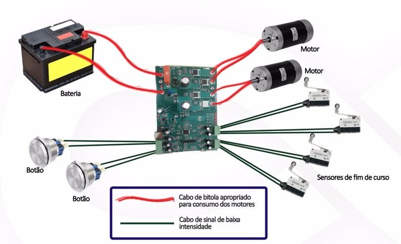
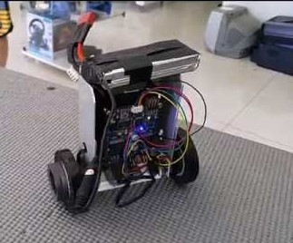
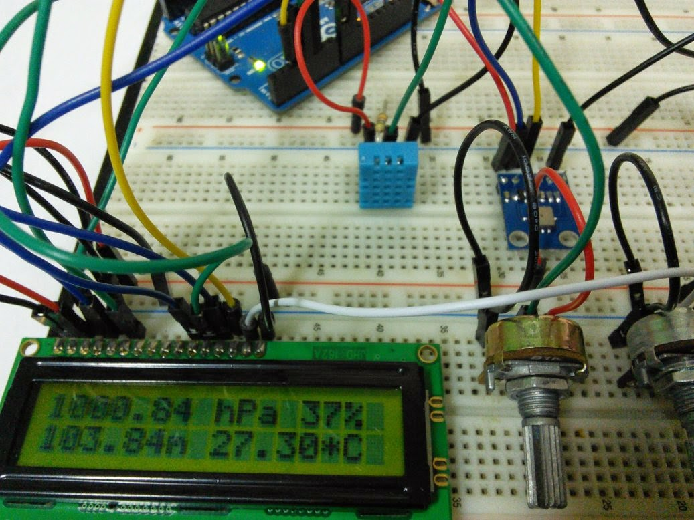

Projetos de dispositivos Físicos
Projeto final de Acionamentos Elétricos
No projeto final de Acionamentos Elétricos, os alunos tem como objetivo criar um dispotivo que acione motores através de PWM. PMW (Pulse Width Modulation) refere-se ao conceito de pulsar rapidamente um sinal digital em um condutor. Esta técnica de modulação é comumente aplicada no controle de motores elétricos, aquecedores, LEDs ou luzes. 
Girafa de Natureza do Design
No projeto de Natureza do Design, os alunos tem que construir uma girafa, a partir da utilização das máquinas do FabLab, como a impressora 3D e a Cortadora a lazer. Assim, as técnicas de utilização das máquinas são ensinadas e os alunos obtém noção de como ae engenharia funciona na prática.

Projeto final de modelagem e controle
No projeto final de Modelagem e Controle, os alunos tem o objetivo de montar um robô auto-equilibrante. Neste trabalho é estudado o controle de equilíbrio e posição do robô. Esta aplicação tem estrutura e riqueza de dinâmica física. 
Estação meteorológica
No projeto de Instrumentação e medição, o objetivo é construir uma estação meteorológica. Tal estação feita com Arduino é capaz de medir a temperatura, umidade, pressão e luminosidade e mostrar os dados em um display de LCD. 